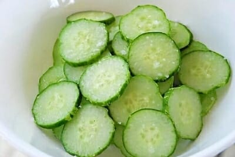
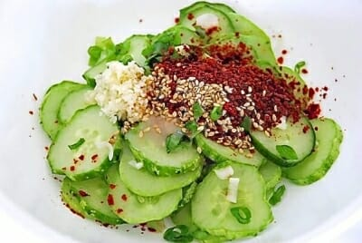

Oi Muchim is a spicy cucumber salad. Oi means cucumber, and muchim means mixed with seasonings.
It’s a simple vegan side dish (banchan) you can make with any crunchy cucumbers, such as Korean
cucumbers, pickling cucumbers (aka Kirby), Persian, English, Japanese cucumbers, etc. It’s delicious with
any Korean meal and can be a quick kimchi substitute.
Ingredients:
1 Korean cucumber
1 teaspoon salt
1 tablespoon Korean red chili pepper flakes
1 tablespoon chopped scallion
1/2 teaspoon garlic minced
1 teaspoon vinegar
1/2 teaspoon sugar
1 teaspoon sesame seeds
1 teaspoon sesame oil
Instructions:
Thinly slice the cucumber (1/8 to 1/4-inch thick). Toss gently with salt and set aside for
about 15 minutes. This will let the excess water be drawn out of the cucumbers.

Afterwards, drain excess liquid. Avoid squeezing the slices as they will bruise.
Add in the rest of the ingredients: Korean red chili pepper flakes, chopped scallion, garlic,
vinegar, sugar, sesame seeds, and sesame oil. Mix well with all of the remaining ingredients.
Taste and adjust the seasonings if necessary.

Store and use in any dish to add a fresh, crunchy kick!
Extra storage instructions: Use a glass container for easy cleaning.
Extra Notes
When making a large batch, it can help to leave the salted cucumber slices in a colander or some other type
of draining bowl. This can make it easier to just add the other ingredients and mix.
The cucumbers will marinate more over time, and become stronger tasting as it sits in the vinegar. Let the
cucumbers sit in the fridge as they become more sour to the taste!